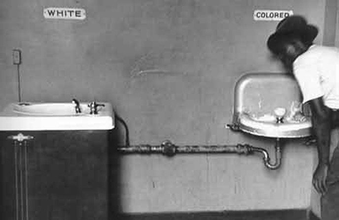
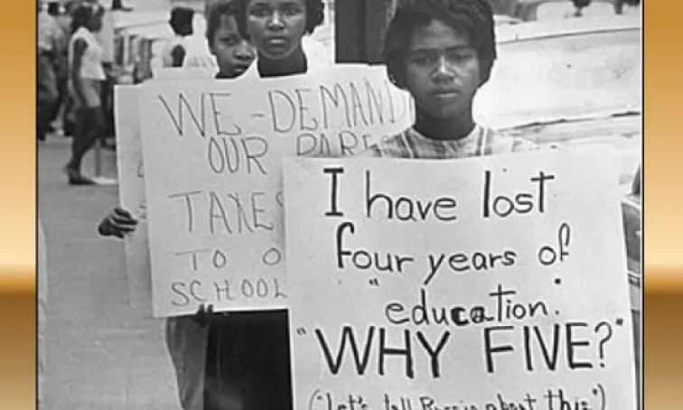

How do we see the impact of Jim Crow laws in To Kill a Mockingbird?


One example, is Tom Robinson, a black man falsely accused of sextually assulting a white woman named Mayella Ewell.
Another example is that they enforced segregation on public transportation, requiring Black passengers to use separate facilities, sit in the back of buses and trains, and endure inferior conditions.
They also created a system of legal racial segregation where schools for Black and white students were separate, but the schools for Black students were chronically underfunded, had fewer resources, and worse facilities.
There were also laws that created systemic inequality and limiting opportunity for African Americans for decades after slavery.
White men felt more superior than black men.
A white man's word was accepted more than that of a black man's.
African American churches were just as likely to uphold the Jim Crow laws as white churches.
Whites saw themselves as rich and blacks as poor.
The community in the book also thought that any type of relationship between both races was wrong.
They separated both races and caused each race to have their own buildings and areas.